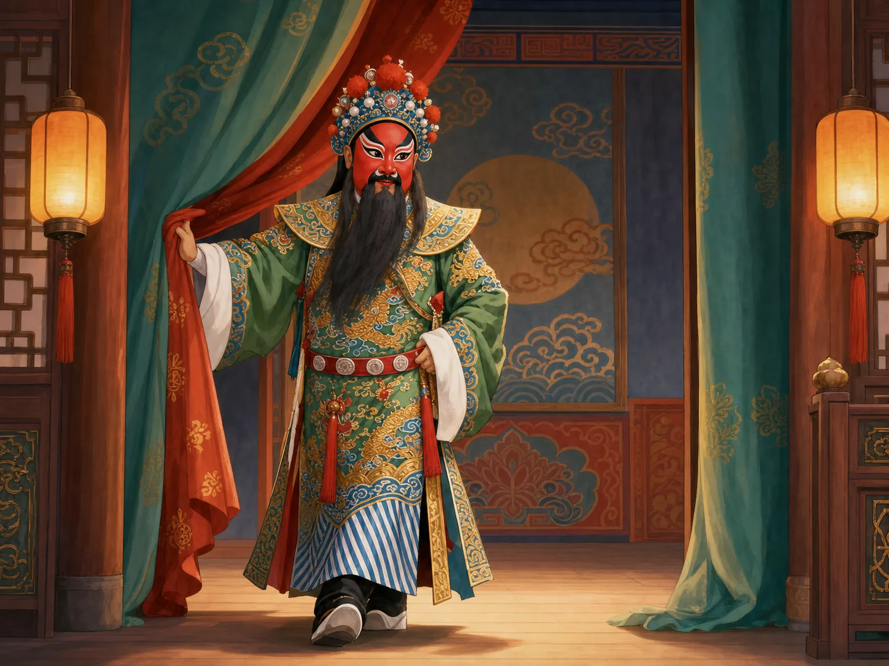
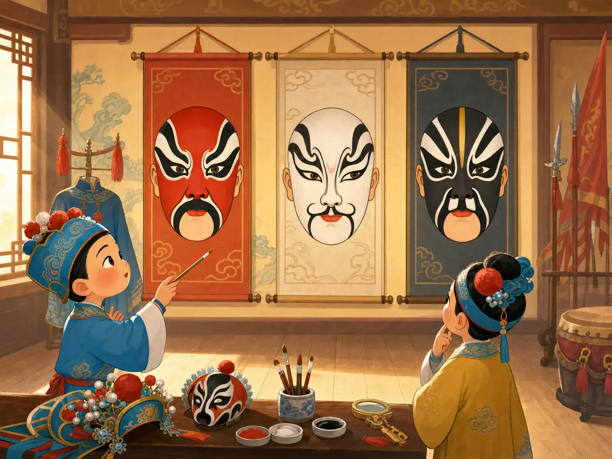

台上没有马，观众为什么看见了马？
There Is No Horse on Stage - So Why Can We See One?
阅读难度 · 困难Reading level · Hard
Page 1
第一眼：演员手里只有一根马鞭
First Look: The Actor Holds Only a Riding Whip

This is a modern AI-generated illustration in a Peking opera style, not a photograph of a performance. It cannot identify a role, play, or correct stage movement, and its costume, face paint, set, and pose may be inaccurate.
锣鼓突然加快。一位演员扬起马鞭，身体微微起伏，脚下走出忽快忽慢的圆圈。他勒住缰绳，侧身躲过一根想象中的树枝，又像是翻过了山坡。舞台上没有马，没有树林，也没有真正的山路，观众却能看见一段赶路的旅程。
这不是因为观众被骗了，而是演员和观众共同遵守了一套舞台语言。马鞭提示“这里有马”，但真正让马出现的，是手腕怎样牵缰、双腿怎样配合、目光望向哪里，以及锣鼓怎样催促动作。换一套节奏和身段，同一根马鞭还可以表现上马、下马、慢行、飞奔，甚至马受了惊。
京剧常用很少的实物，换来很大的想象空间。传统舞台上的“一桌二椅”可以随剧情变成厅堂、衙门、城楼、床榻或山坡，却不是每出戏都必须摆同样一套。所谓虚拟化也不是随便比画：动作经过训练，有可以辨认的规则，还要让这一场戏里的情绪和人物成立。
The percussion suddenly quickens. An actor raises a riding whip, lets the body rise and fall, and circles the stage at changing speeds. The rider pulls the reins, leans away from an imaginary branch, and seems to cross a hill. There is no horse, forest, or road onstage, yet the audience can see a journey.
The audience has not been tricked. Performers and viewers are sharing a stage language. The whip says, “There is a horse here,” but the horse really appears through the turn of a wrist, the timing of the legs, the direction of the eyes, and the percussion driving the action. With different movements and rhythms, the same whip can suggest mounting, dismounting, walking, galloping, or even a frightened horse.
Peking opera often uses a few real objects to open a large space in the imagination. A traditional “one table and two chairs” arrangement may become a reception hall, courtroom, city wall, bed, or hillside, although every play does not use the same setup. This symbolic staging is not random mime. Its movements follow trained conventions while still having to fit the character and emotion of this particular scene.
Page 2
1790年，京剧并没有在一天里被发明
Peking Opera Was Not Invented in a Single Day in 1790

This is a modern AI-generated face-paint classroom, not a historical troupe, a museum chart, or a photograph of real instruction. Its three faces do not form a color dictionary for every play.
人们常把1790年说成京剧的“生日”。那一年是China's last imperial dynasty, from 1644 to 1912.乾隆皇帝八十寿辰，来自南方的三庆等徽班陆续到北京演出。可是他们没有在城门口突然发明一种完整的新戏。徽班是表演团体，不只会唱一种声腔；北京当时也早已有昆曲、秦腔、京腔和其他表演传统。
此后几十年，徽班与进京的汉调演员合作。西皮、二黄等声腔在舞台上交汇，又吸收昆曲、秦腔、地方音乐、北京语音和不同表演方法。演员换班搭档，观众用掌声和票房作选择，乐师、编戏者和戏班经营者也不断调整。大约到19世纪中叶，一种后来称为京剧的艺术才逐渐清楚、成熟。
因此，“京剧有两百多年历史”可以当作方便的概括，却不表示它和更早的剧种没有关系，也不表示1790年前一天世上毫无线索、第二天便样样齐全。京剧像一条汇流的河：有重要年份，却没有唯一的一滴“发明之水”。昆曲、秦腔、汉调和徽调也没有完成任务后消失，它们继续拥有各自的舞台生命。
The year 1790 is often called Peking opera's “birthday.” That year, during the China's last imperial dynasty, from 1644 to 1912., the Qianlong emperor celebrated his eightieth birthday, and the Sanqing troupe and other Anhui troupes arrived in Beijing over time to perform. They did not suddenly invent a finished opera form at the city gate. An Anhui troupe was a company of performers, not one single melody, and Beijing already had Kunqu, Qinqiang, Jingqiang, and other theatrical traditions.
Over the following decades, Anhui troupes worked with performers of Han opera who came to the capital. Vocal systems including xipi and erhuang met onstage and absorbed elements of Kunqu, Qinqiang, regional music, Beijing speech, and different acting practices. Performers changed partners and companies. Audiences responded with applause and ticket money. Musicians, play arrangers, and troupe managers kept adjusting the form. By around the mid-nineteenth century, the art later called Peking opera had gradually become more recognizable and mature.
“More than two hundred years old” is therefore a useful shortcut, not a claim that Peking opera had no earlier connections or that everything appeared overnight in 1790. The form is more like a river fed by several currents: it has important dates, but no single drop of “invention water.” Kunqu, Qinqiang, Han opera, and Anhui opera did not vanish after contributing to it. They continued their own stage lives.
Page 3
红脸一定是好人，白脸一定是坏人吗？
Is Every Red Face Good and Every White Face Bad?

This is a modern AI-generated imagining of makeup, not a record of an old troupe school or a present-day academy. It cannot prove the child's age, the correct design or tools, the teacher-student relationship, or the safety conditions.
生、旦、净、丑叫作行当，是按照角色的年龄、性别、身份、声音和表演技能形成的舞台分类，不是“英雄、姑娘、坏人、笑星”四个盒子。生行多演男性人物，旦行演女性人物；净行常用夸张脸谱和有力的声音塑造性格鲜明的人物；丑行常在鼻眼附近画一小块白，也可能机智、善良、可敬，甚至严肃。每个大类里面还有许多分支。
也不是所有京剧人物都画满脸谱。许多生、旦角色采用较接近日常面容的“俊扮”，老旦也常为素面；完整而夸张的脸谱主要和净行及部分丑行等表演传统有关。脸谱的颜色、线条和谱式确实会给熟悉京剧的观众提示：红色常与忠勇相连，黑色有时提示刚直或威猛，白色在某些著名角色身上让人想到多疑或权谋。但颜色不是一套永远不变、脱离剧目的性格密码。
同一种颜色放在不同角色、不同谱式或不同剧团传统里，作用可能改变；观众还要看眉眼怎样勾、线条怎样分区、演员唱什么、做什么。图上的红、白、黑三张脸只能开启问题，不能替你判案。真正会“说话”的不是一罐颜色，而是整套扮相和表演。
Sheng, dan, jing, and chou are role categories. They organize characters through age, gender, social identity, voice, and performance skills. They are not four boxes labeled “hero, girl, villain, and comedian.” Sheng roles are mainly male characters, while dan roles are female characters. Jing performers often use bold face paint and powerful voices for strongly drawn personalities. Chou performers commonly wear a small white patch around the nose and eyes, but their characters can be clever, kind, honorable, or serious as well as funny. Each category has many branches.
Not every Peking opera character wears a fully painted face. Many sheng and dan roles use makeup closer to an ordinary face, and older-woman roles are often relatively plain. Elaborate painted designs belong especially to jing and some chou traditions. Color, line, and pattern can certainly offer clues to an experienced viewer. Red is often connected with loyalty and courage; black may suggest directness or force; white on certain famous characters may evoke suspicion or political calculation. But color is not an eternal personality code that works apart from the play.
The same color can do different work on another character, in another design, or within another troupe's tradition. A viewer must also notice the shapes around the eyes, the divisions of the design, and what the performer sings and does. The three red, white, and black faces in the picture can begin a question, but they cannot decide the case. What “speaks” is not a pot of color. It is the complete makeup and performance.
Page 4
一匹看不见的马，需要整个舞台一起跑
An Invisible Horse Needs the Whole Stage to Run
京剧常把基本表演概括为“唱、念、做、打”。唱不只是把歌词唱响，还要处理声腔、节拍和人物感情；念是有节奏、有音色设计的舞台语言；做包括眼神、手势、步法和身体动作；打是经过编排的武打与翻跌，不是真在台上互相伤害。这四项会交织在一起，不是四门互不相干的考试。
乐队也在“演”。文场以京胡等弦管乐器为重要声音，常托住唱腔；武场以鼓板、锣、钹等打击乐器推动亮相、交锋和场面转换。鼓师通过约定的节奏组织乐队并配合演员。锣鼓经是把打击乐节奏用口头念法和记号传授、排练的一套方法，不是每次都只敲同一个“咣咣锵”。
于是，那匹看不见的马其实有许多合作者：演员给它重量和方向，马鞭给它一个标志，鼓点给它速度，其他乐器给场景呼吸，观众补上马蹄、尘土和远路。若只有演员挥鞭却没有身体控制，马不会出现；若只听见巨响却看不懂节奏，旅程也不会成立。京剧的“简”并不是少做，而是把许多劳动压进一个准确动作。
Peking opera performance is often summarized as “singing, reciting, acting, and combat.” Singing involves vocal patterns, meter, and a character's feelings, not just loud lyrics. Reciting is stage speech shaped through rhythm and vocal color. Acting includes the eyes, hands, steps, and whole body. Combat uses choreographed fighting and tumbling; performers are not supposed to injure one another for real. The four skills constantly overlap rather than behaving like four unrelated tests.
The orchestra performs too. The wenchang, or “civil” side, features strings and winds such as the jinghu and often supports singing. The wuchang, or “martial” side, uses percussion such as clappers, drums, gongs, and cymbals to propel entrances, confrontations, and changes of scene. The lead percussionist uses agreed rhythmic patterns to coordinate musicians and performers. Luogujing is a system of spoken syllables and notation used to teach and rehearse percussion patterns, not one endless “clang-clang-bang.”
The invisible horse therefore has many makers. The actor gives it weight and direction. The whip gives it a sign. The drum gives it speed. Other instruments let the scene breathe, and the audience supplies hooves, dust, and a distant road. A horse will not appear if the actor merely waves a whip without bodily control. A journey will not work if the percussion is only noise. Peking opera's simplicity does not mean less work. It compresses many people's labor into one precise action.
Page 5
梅兰芳很重要，但舞台不是他一个人改变的
Mei Lanfang Mattered, but He Did Not Change the Stage Alone
梅兰芳（1894 - 1961）是著名旦角演员。他在唱腔、身段、服装、化妆和新剧目上持续探索，形成影响很大的梅派；他还多次到日本、美国和苏联等地演出，让许多海外观众第一次在现场接触京剧。可是“第一次把京剧带给世界”或“一个人改革了京剧”都说得太满。与他同时和前后相继的演员、乐师、编剧、教师、舞台工作人员与其他流派，也在改变这门艺术。
梅兰芳是男性，专演旦行，这与京剧的性别历史有关。清代北京的公共舞台曾长期限制女性演出，男演员因而发展出男旦传统。19世纪后期起，女性演员逐渐在一些城市登台；20世纪初限制改变后，她们在京剧舞台上取得越来越重要的位置。今天既有女性演旦，也有女性演老生、武生等角色；男旦传统也没有因此变成一句笑话。舞台上的角色性别、演员的性别和历史制度，是三个相关却不同的问题。
学习京剧确实需要长期练声、压腿、走圆场、翻跌和反复排戏。旧式科班常让儿童很早入班，在严格契约和等级关系中生活；有些训练伴随体罚、伤病、失学和缺少选择，不能只用“吃苦成才”来浪漫化。今天的专业戏校仍然要求纪律和重复练习，同时也应有文化课程、科学训练、医疗与未成年人保护。保存一项技艺，不等于保存过去所有不公平的制度。
Mei Lanfang (1894 - 1961) was a celebrated dan performer. He kept experimenting with singing, movement, costume, makeup, and new plays, developing the highly influential Mei school. He also performed several times in Japan, the United States, the Soviet Union, and elsewhere, giving many overseas viewers their first live encounter with Peking opera. Yet “the first person to take Peking opera to the world” and “the man who reformed it alone” both go too far. Performers before, beside, and after him - as well as musicians, playwrights, teachers, stage crews, and artists of other schools - also changed the form.
Mei was a man who specialized in female roles, a fact connected to Peking opera's gender history. For a long period in Qing Beijing, women were restricted from appearing on public stages, and male performers developed a tradition of playing dan roles. From the late nineteenth century, women gradually appeared on stages in some cities. After restrictions changed in the early twentieth century, actresses took increasingly important places in Peking opera. Today, women perform dan roles and also specialize in such categories as laosheng and wusheng. The male-dan tradition did not therefore become a joke. A character's gender, a performer's gender, and the rules of a historical society are three connected but different subjects.
Peking opera does demand years of vocal work, stretching, circling steps, tumbling, and repeated rehearsal. In older troupe schools, children often entered young and lived under strict contracts and hierarchies. Some training involved corporal punishment, injury, lost schooling, and little personal choice. That history should not be romanticized as “suffering creates talent.” Professional academies today still require discipline and repetition, but they should also provide general education, informed physical training, health care, and protection for minors. Preserving a skill does not require preserving every injustice of the old system.
Page 6
被列入“非遗”，是不是从此不许改变？
Does Heritage Status Mean Nothing May Change?
2010年，京剧列入联合国教科文组织“人类非物质文化遗产代表作名录”。非物质文化遗产不是一件锁进玻璃柜的古董，而是由人表演、学习和继续传下去的知识与实践。列入名录不是给每一个旧剧本盖“永远不许改”的印章，也不是宣布京剧比所有地方戏更高级。
今天的舞台既在整理老戏、向老师学流派，也在创作新编历史剧、现代题材和小剧场作品。有的演出使用字幕、导赏、灯光、投影或新的舞台设计，帮助不懂方言、唱词或历史背景的观众进入故事；学校课程、体验工作坊、录音录像和网络短片也让更多孩子先听懂一小段。创新是否成功，要看它是否真正服务人物、音乐和观众，不能只凭“用了新科技”判断。
下次看到演员扬起马鞭，可以先别急着问“真马在哪里”。看看脚步是快还是慢，肩膀怎样起伏，眼睛望向多远；听听鼓点何时催促、何时停住。再问：是哪一种行当？脸谱是否真的适用于这个角色？节目单怎样介绍剧种、流派和演员？当你能用这些线索看见一匹并不存在的马，你已经不是被动接受“古老文化”，而是在和舞台一起完成它。
In 2010, Peking opera was inscribed on UNESCO's Representative List of the Intangible Cultural Heritage of Humanity. Intangible cultural heritage is not an antique locked in a glass case. It is knowledge and practice that people perform, learn, and continue to pass on. Inscription does not stamp every old script “never change this,” and it does not declare Peking opera superior to every regional form.
Artists today restore older plays and study performance schools, but they also create new historical dramas, modern stories, and works for small theaters. Some productions use subtitles, introductions, lighting, projections, or new stage designs to help viewers who do not know the dialect, lyrics, or historical setting enter the story. School lessons, workshops, recordings, and short online videos give more children a first way in. Whether an innovation works depends on how it serves the characters, music, and audience - not simply on whether it uses new technology.
The next time an actor raises a riding whip, do not rush to ask where the real horse is. Watch whether the steps are slow or fast, how the shoulders rise, and how far the eyes look. Listen for the moment the drum urges the rider onward or suddenly stops. Then ask: Which role category is this? Does this face design really belong to this character? What does the program say about the play, school, and performer? When these clues let you see a horse that is not there, you are no longer passively receiving “ancient culture.” You are helping the stage complete it.
小结：空舞台并不空
In Summary: An Empty Stage Is Not Empty
京剧不是1790年某一天突然完成的发明，也不是红、白、黑三种脸谱颜色就能讲完的艺术。它在清代北京由不同班社、声腔和表演传统长期汇合，又由一代代演员、乐师、教师、编剧、后台人员和观众继续改变。
一根马鞭能变出一匹马，是因为唱、念、做、打，文场、武场，程式、人物和想象同时工作。舞台上少放一样东西，演员就要多给一个准确线索；观众也要多完成一步。空舞台从来不空 - 它装着许多人的技术、历史和共同想象。
Peking opera was not suddenly completed on one day in 1790, and three face-paint colors cannot explain the whole art. It grew in Qing Beijing through a long meeting of troupes, vocal systems, and performance traditions. Generations of performers, musicians, teachers, playwrights, backstage workers, and audiences have continued to change it.
A riding whip becomes a horse because singing, reciting, acting, combat, civil and martial music, convention, character, and imagination work at once. When the stage removes one real object, the performer must offer a more exact clue - and the audience must complete one more step. The empty stage is never empty. It holds many people's skill, history, and shared imagination.